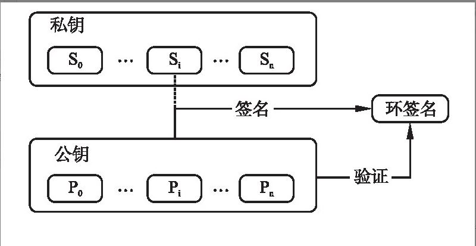

环签名
文章内容部分来自论文：林孟晨,冯勇,付晓东.一种基于联盟区块链的电子医疗记录安全共享模型[J].小型微型计算机系统,2021,42(10):2161-2166.
群签名技术
在一个群签名方案中，一个群体中的任意一个成员可以以匿名的方式代表整个群体进行对消息的签名，而且可以只用单个群公钥进行验证。
环签名技术
环签名(Ring Signature)是一种数字签名方案,是一种简化的群签名，其中只有环成员没有群管理员，不需要环成员间的合作，用公钥集代替特定的公钥进行有效性验证。本质上“群”和“环”都可理解为多个成员组成的组织，区别在于是否存在一个能打开签名的leader。环签名方案将签名者公钥隐藏在了签名使用的公钥列表中，公钥列表越大，匿名性越高，适用于对隐私要求较高的多方协作场景。
实质
环签名的实质为n个公钥中隐藏自己拥有私钥的那个公钥，具体应用在于区块链上隐藏交易发送人的地址或者公钥。
签名过程
- 初始化环，由环成员执行，生成环参数，环参数就好比微信面对面建群的密码，任何知道该参数的成员都可以加入该环；
- 加入环，由环成员执行，通过环参数获得公私钥对；
- 生成环签名，环成员使用私钥和随意多个环公钥对信息签名；
- 验证环签名，验证者可通过环参数验证签名的合法性。
具体实现

本博客所有文章除特别声明外，均采用 CC BY-NC-SA 4.0 许可协议。转载请注明来源 Demon Home！